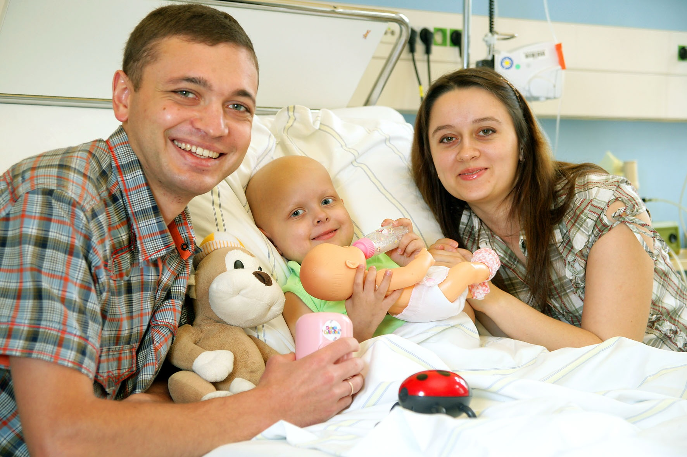

Mit Thomas Gottschalk, Nastja und ihren Eltern bei der Galaveranstaltung.
Berlin · Ukraine · Fernsehgala
Die Zusammenarbeit mit der Ukraine entwickelte sich schneller, als ich erwartet hatte. Immer mehr Familien kamen mit ihren krebskranken Kindern nach Berlin. Die Stiftung „Ein Herz für Kinder“ übernahm in vielen Fällen die Finanzierung der Behandlung. Ohne diese Unterstützung hätten sich die meisten Familien den Aufenthalt in Deutschland niemals leisten können.
Eines Tages klingelte das Telefon. Eine Mitarbeiterin von „Ein Herz für Kinder“ fragte mich, ob wir bereit wären, bei der großen Live-Fernsehgala mitzuwirken. Man plane einen Beitrag über eines unserer ukrainischen Kinder und suche eine Familie, die bereit sei, ihre Geschichte öffentlich zu erzählen. Ich musste nicht lange überlegen. Natürlich machten wir mit.
Gemeinsam überlegten wir, welche Familie sich dafür eignen würde. Nicht jede Erkrankung eignet sich für das Fernsehen. Und nicht jede Familie möchte ihr Schicksal öffentlich machen. Schließlich fanden wir die kleine Nastja und ihre Eltern, die bereit waren, ihre Geschichte zu erzählen.
Die Dreharbeiten in der Kinderklinik verliefen erstaunlich unaufgeregt. Nach kurzer Zeit achtete kaum noch jemand auf die Kameras. Im Mittelpunkt stand ohnehin das Kind. Für das Fernsehteam war es eine Geschichte. Für uns war es der ganz normale Alltag auf einer kinderonkologischen Station. Einige Wochen später erhielten wir die Einladung zur Generalprobe der Fernsehgala.
Ich nahm meine beiden Kinder Jan und Kaja mit. Sie waren neugierig, wie eine große Livesendung entsteht. Ehrlich gesagt war ich es auch. Schon beim Betreten des Studios herrschte geschäftiges Durcheinander. Überall liefen Menschen mit Headsets herum. Kameraleute schoben ihre schweren Kameras in Position, Techniker verlegten Kabel, Bühnenarbeiter bauten Kulissen um. Jeder schien genau zu wissen, was er zu tun hatte.
Ich traf Gaby Dohm. Sie sollte später einen Beitrag moderieren. Im Gespräch gestand sie mir, dass sie furchtbares Lampenfieber habe. Das erstaunte mich. Immerhin stand sie seit Jahrzehnten vor Fernsehkameras. Offenbar schützt Erfahrung nicht vor Nervosität.
Meine Kinder interessierten sich mindestens genauso sehr für die Menschen hinter den Kulissen wie für die eigentliche Show. Hape Kerkeling nahm sich Zeit für ein kurzes Gespräch mit ihnen. Er wirkte freundlich, offen und völlig unkompliziert.
Besonders eindrucksvoll war für mich eine Szene hinter dem Vorhang. Udo Jürgens wartete bereits an seinem Flügel. Er sollte auf einer hydraulischen Bühne langsam nach oben gefahren werden. Doch plötzlich bewegte sich nichts mehr. „Havarie!“ Innerhalb weniger Sekunden versammelten sich Regisseur, Techniker, Bühnenmeister, Kameraleute und weitere Mitarbeiter. Jeder brachte seine Erfahrung ein. Gemeinsam suchten sie nach einer Lösung.
Ich musste unwillkürlich schmunzeln. Eigentlich sah das genauso aus wie bei uns in der Kinderklinik. Wenn wir vor einem schwierigen medizinischen Problem standen, rief ich ebenfalls die entscheidenden Leute zusammen. Jeder brachte sein Wissen ein. Gemeinsam suchten wir nach der besten Lösung. Nur dass es bei uns nicht um eine Hebebühne ging, sondern um das Leben eines Kindes. Am Abend begann dann die Livesendung.
Jan und Kaja waren inzwischen wieder zu Hause. Dafür waren jetzt Hilde und meine Schwester Marlene gekommen. Für mich wurde es langsam ernst.
Kurz vor meinem Auftritt ging es noch einmal in die Maske. Zum ersten Mal in meinem Leben saß ich vor einem großen Spiegel, während mir eine Maskenbildnerin das Gesicht puderte. Neben mir nahm Udo Jürgens Platz. Er unterhielt sich ganz selbstverständlich mit der Maskenbildnerin über irgendwelche Belanglosigkeiten. Ich weiß längst nicht mehr, worüber sie sprachen. Gerade das fand ich bemerkenswert. Wenige Minuten später würde er vor Millionen Fernsehzuschauern auftreten – und hier plauderte er völlig entspannt, als säße er beim Friseur.
Anschließend wartete ich am Bühnenrand auf meinen Einsatz. Dort traf ich Marietta Slomka. Ich fragte sie, ob sie vor einer Livesendung eigentlich aufgeregt sei. „Nein“, antwortete sie. „Eigentlich nie.“ Ich habe ihr das sofort geglaubt. Sie strahlte eine unglaubliche Ruhe aus.
Wenig später begegnete ich Peter Maffay. Ich erzählte ihm von unserer Kinderonkologie und fragte ihn spontan, ob er nicht einmal unsere kleinen Patienten besuchen wolle. Er reagierte freundlich und interessiert. Leider wurde aus dieser Idee später nichts.
Dann war es soweit. Thomas Gottschalk führte wie immer locker und souverän durch die Sendung. Während der Werbepausen herrschte auf der Bühne hektische Betriebsamkeit. Kulissen wurden verschoben, Kameras neu positioniert und Künstler für ihren nächsten Auftritt vorbereitet. Zu Hause vor dem Fernseher bekam davon niemand etwas mit.
Schließlich wurden auch wir aufgerufen. Gemeinsam mit der kleinen Nasstja und ihren Eltern betraten wir die Bühne. Der zuvor gezeigte Film hatte den Zuschauern bereits ihre Geschichte erzählt. Jetzt standen sie leibhaftig vor Millionen Fernsehzuschauern. Neben uns nahm Vitali Klitschko Platz. Er begrüßte die Familie herzlich und überraschte sie mit einer Reise ins Disneyland.

Zum Abschluss unseres Gesprächs wandte ich mich an ihn. „Herr Klitschko“, sagte ich, „unsere kleinen Patienten würden sich sehr freuen, wenn Sie sie einmal in der Kinderklinik besuchen würden.“ Er lächelte, sagte spontan zu und versprach, sich darum zu kümmern. Damals ahnte ich noch nicht, dass dieses Versprechen tatsächlich eingelöst werden würde. Allerdings nicht durch Vitali.
Sondern von seinem Bruder Wladimir.